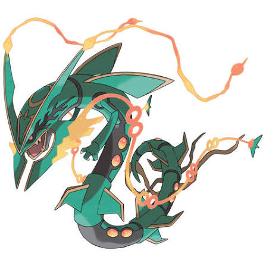

Estudante de Análise e Desenvolvimento de Sistemas.

Sou estudante de **Análise e Desenvolvimento de Sistemas (ADS)** e estou construindo minha trajetória na área de tecnologia. Ainda não possuo um grande domínio técnico, mas acredito que conhecimento é algo que se conquista com dedicação, prática e constância. Nos últimos meses decidi mudar completamente minha forma de estudar e encarar meu desenvolvimento profissional. Foi assim que nasceu o **Projeto Phoenix**, um compromisso pessoal baseado na ideia de que pequenas ações repetidas todos os dias constroem grandes resultados. Desde então, venho organizando minha rotina para estudar com mais disciplina, desenvolver projetos próprios, praticar programação e evoluir continuamente como desenvolvedor. Atualmente estudo e desenvolvo aplicações utilizando tecnologias como **HTML, CSS, JavaScript, Node.js, Express, MySQL e PostgreSQL**, buscando entender não apenas como utilizar essas ferramentas, mas também os conceitos por trás de um software bem estruturado. Cada projeto que desenvolvo representa um novo aprendizado e uma oportunidade de colocar em prática aquilo que venho estudando. Meu objetivo é crescer profissionalmente, adquirir experiência prática e participar do desenvolvimento de soluções que façam a diferença, sempre buscando evoluir minhas habilidades e aprender com novos desafios. Acredito que a evolução é construída diariamente. Cada projeto desenvolvido, cada erro corrigido e cada novo aprendizado representam um passo importante na jornada para me tornar um desenvolvedor cada vez mais preparado e capaz de contribuir com qualidade e dedicação.